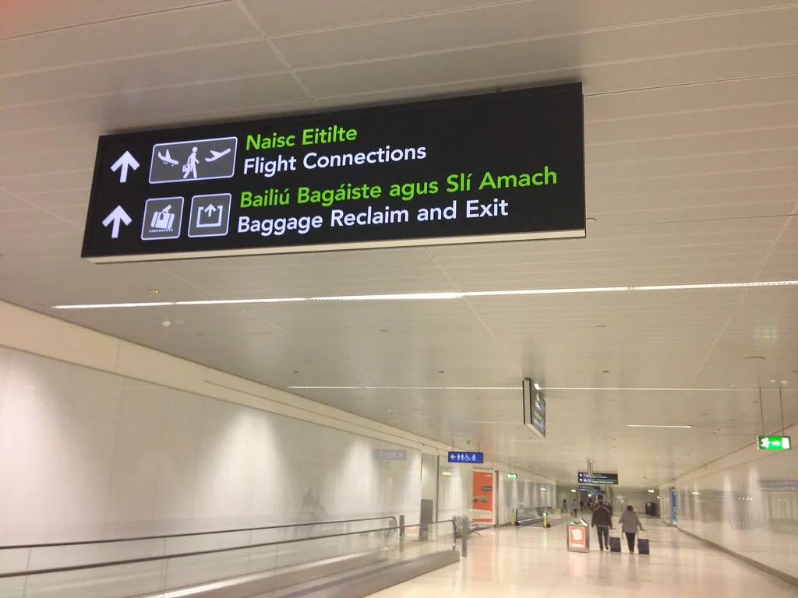

인천공항, 올여름 하계 성수기 391만 명…역대 최다 경신
인천국제공항공사는 지난 7월 25일부터 8월 10일까지 이어진 하계 성수기 기간 인천공항 이용객이 총 391만 6084명, 일평균 23만 358명을 기록했다고 밝혔다. 이는 지난해 같은 기간보다 5.8% 늘어난 수치로, 하계 성수기 기준 역대 최다 실적이다. 특히 지난 2일에는 하루 동안 24만 7200명이 공항을 이용해 종전 최다 기록이었던 올해 설 연휴 첫날의 24만 7104명을 넘어서며 일일 여객 최다치도 새로 썼다. 개항 이후 여름철 성수기 기록이 새로 쓰인 것은 이번이 처음이라고 공사 측은 설명했다.
지역별 이용객을 보면 일본 노선이 99만 6723명으로 전체의 25.6%를 차지해 가장 많았다. 뒤를 이어 동남아 노선이 86만 2214명(22.2%), 중국 노선이 83만 8298명(21.6%)을 기록하며 근거리 노선에 이용객이 몰리는 모습을 보였다. 반면 미주와 유럽 등 장거리 노선은 각각 9.7%, 7.1%의 점유율에 그쳐 한 자릿수 비중에 머물렀다. 공사 측은 내국인의 여름휴가 해외여행 수요와 더불어 올해 초부터 이어진 외국인 방한 관광객 증가세가 맞물리며 전체 이용객이 크게 늘었다고 분석했다. 특히 일본과 동남아 등 근거리 노선의 성장세가 두드러지면서 전체 여객 증가를 견인한 것으로 나타났다.

인천공항공사는 이용객 급증에 대비해 하계 성수기 기간 특별교통대책반을 운영하며 혼잡 관리에 나섰다. 출입국 심사 인력을 탄력적으로 배치하고 수하물 처리 시설의 가동률을 높이는 한편, 터미널 내 안내 인력을 추가 투입해 이용객 불편을 최소화하는 데 주력했다고 설명했다. 공사는 이 같은 대책 덕분에 여객이 몰린 기간에도 출입국 수속이 큰 지연 없이 안정적으로 이뤄졌다고 평가했다.

업계에서는 엔화 약세 기조가 이어지면서 가까운 일본으로의 여행 수요가 특히 두드러졌다고 보고 있다. 항공사들도 이 같은 수요에 맞춰 일본과 동남아 노선을 중심으로 임시편을 늘리는 등 공급 확대에 나선 것으로 알려졌다. 여행업계 관계자는 환율 부담이 상대적으로 적은 근거리 노선을 찾는 여행객이 늘면서 성수기 예약이 조기에 마감되는 사례도 잇따랐다고 전했다. 저비용항공사들도 인기 노선에 대한 좌석 공급을 늘리며 여름 성수기 특수를 누린 것으로 알려졌다.
인천공항공사 관계자는 "역대 최대 규모의 여객을 안정적으로 처리한 것은 그간 축적된 운영 노하우와 시설 투자의 결과"라며 "추석 연휴 등 향후 성수기에도 이용객 불편이 없도록 선제적으로 대비하겠다"고 밝혔다. 공사는 겨울 성수기를 앞두고도 수요 예측을 바탕으로 인력 운영 계획을 미리 마련하는 등 지속적인 혼잡 관리 대책을 이어갈 방침이라고 덧붙였다.
한편 이번 하계 성수기 기록 경신은 국내 항공 수요 회복세가 뚜렷해지고 있음을 보여준다는 평가도 나온다. 항공업계는 국제선 노선망 확충과 함께 외국인 관광객 유치 확대가 맞물리면서 당분간 인천공항 이용객 증가세가 이어질 것으로 전망하고 있다. 다만 일부에서는 여객 증가에 맞춰 활주로와 터미널 등 공항 인프라 확충도 함께 속도를 내야 한다는 지적도 함께 제기되고 있다. 공사 측은 다가오는 추석 연휴를 비롯한 하반기 성수기에도 유사한 수준의 혼잡이 예상되는 만큼 선제적인 대응 방안을 마련하겠다고 덧붙였다.